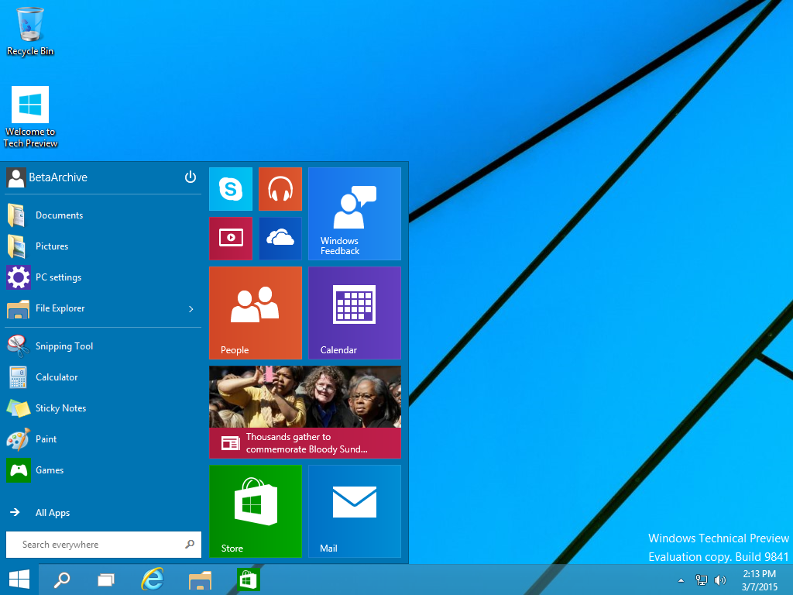
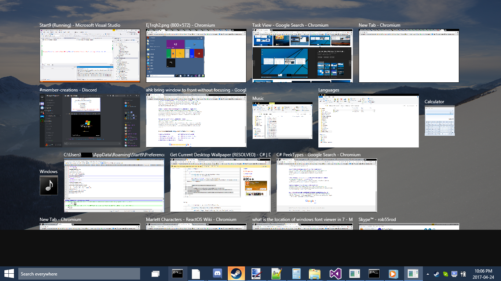

fonpaolo wrote:
Splitwirez wrote:
Saliva and computers don't mix well.
I know, but... it's inevitable.

fonpaolo wrote:
Splitwirez wrote:
Currently? Not quite...
...yet >:3
Oh, don't worry Splitwirez, I can wait...

*sigh of relief*
juniper7 wrote:
When can we try it out?
Soon™
juniper7 wrote:
Want to see if it is more likable to use than original Win10 menu.
I would hope so...my group of testers seem...optimistic, thus far.
juniper7 wrote:
I'm sidetracking off topic here,
Fine by me, I'd by a hypocrite to shoot you down .___.
juniper7 wrote:
but isn't that other menu link:
https://www.youtube.com/watch?v=txBaLPFWKzMsomething right up fonpaolo's alley?
I read a little more into it, and it is based on Rainmeter!
...you didn't already know tha-*remembers mention of Flash Menu being based on Flash*
Oh.
juniper7 wrote:
Possibly two or more versions out there.
Not possibly. Definitely.
fonpaolo wrote:
Yes juniper7, as it seems, it's based on Rainmeter, I have to investigate how it's made, since I know some (...ok. most) Classic Shell features are simply impossible or very complicated to simulate. (note I said simulate, not duplicate)

edit: ok, I watched the video and all the already known "problems" of this kind of "start menu" are there, you can only manually add the folders to browse, you can't add or modify anything in a dynamic way, maybe some drag and drop... but not really in the Windows way.
A lot of code for something only aesthetically pleasant, the main reason because I still, only, always use Classic Shell.
All of this:
juniper7 wrote:
fonpaolo
About the not Start9 menu.
I just tried the "release_update__flash_menu_by_chezburgur-d81jzyx"
with Rainmeter & got nowhere with it. Says something about .ini does not contain any meters?
I never used Rainmeter. The internal illustro samples work though.
Downloaded "fmv_3_by_chezburgur-d8w7j7h" & got same problem. I think I will give up on it,
and wait for Splitwirez.
fonpaolo wrote:
juniper7, did you install it with double click on the .rmskin file?
Just tried it and for me works, but... argh!!! ...what a nightmare!

I can admire his hard work, but it's a sort of an hack, even if I know how to use Rainmeter, I had to spend quite some time to come back to my desktop.

edit: not to offend the creator in any way, but not the kind of Rainmeter skin I can suggest, it kills the taskbar, hides Rainmeter commands... ok I used it for a few minutes, but if I had problems to go back, I can imagine someone less experienced, because you have to manually go back, since there's no uninstall (it's not a program, it's a Rainmeter skin, well, more than one).
is why I wasn't satisfied when I tried Flash Menu. (Fun fact: Start9 and Flash Menu share a common ancestor: the early Windows 10 Technical Preview builds

See?)
NoahNicholsFourm wrote:
Interesting.
:3
Also, I forgot to mention Start9's (currently somewhat performance-challenged) Task View reimplementation:



{kind=link}